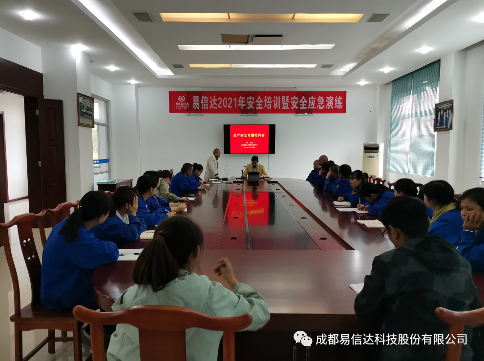
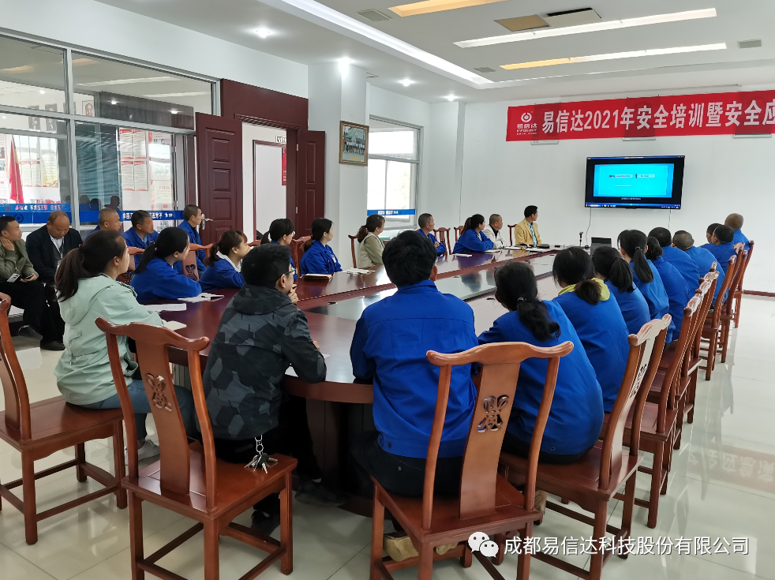
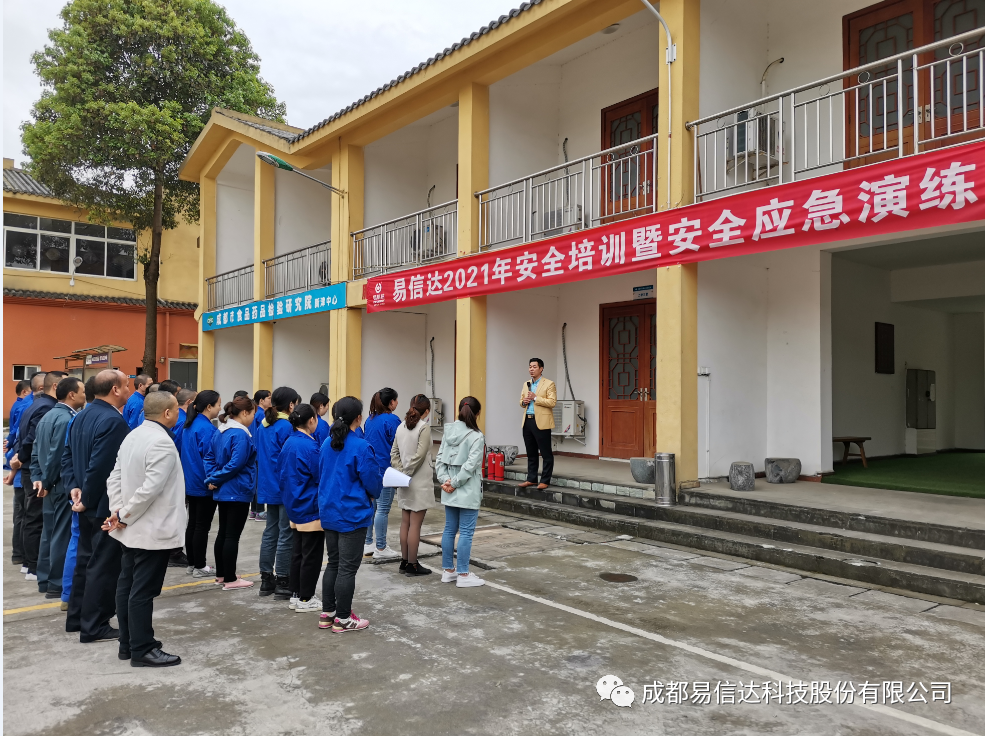
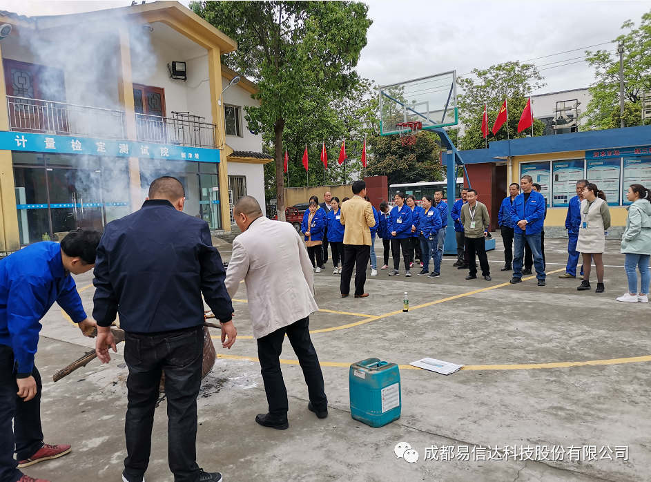
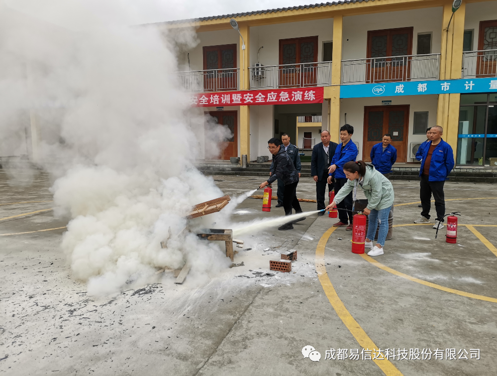

发布时间：2021/04/02 浏览次数：2863
为进一步提高员工安全防范意识，增强干部安全管理水平，易信达公司于2021年4月1日，组织召开了一次安全生产管理培训会暨安全应急演练。 培训共分为四个议程：1、观看近年来企业管理中出现的安全事故视频；2、安全管理人员张伟忠通报近期园区发生的安全事故；3、公司副总经理张建超作为主讲人进行了安全知识教育培训；4、公司篮球场进行安全应急演练。
在培训过程中，公司副总经理张建超强调了落实安全主体责任制的重要性，并对最新的安全法做了一些讲解。同时讲授了在遇到突发事故时应作出怎样的快速反应，怎样在最短的时间内进行逃生，并在逃生过程中应注意哪些方式方法，同时让职工掌握消防设备的使用方法。确保一旦事故发生，能够有效的组织、快速的反应、临危不乱，最大限度的减少事故的危害。
此次安全教育培训形式多样，包括传统的学习培训方法，又辅以图片宣传、视频观看、现场操作等。既能轻松的学到知识，又能最大程度的在生产过程中起到作用。 安全生产教育不仅仅是在知识层面上的讲授，更重要的是在责任的落实，同时保证安全教育日常化、细节化的开展。最终目的就是将安全意识根植于每个职工心中，并培养处处留心安全的习惯。